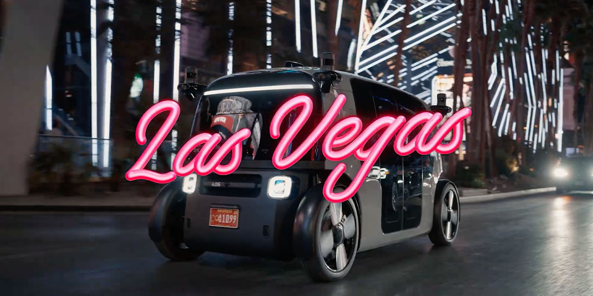
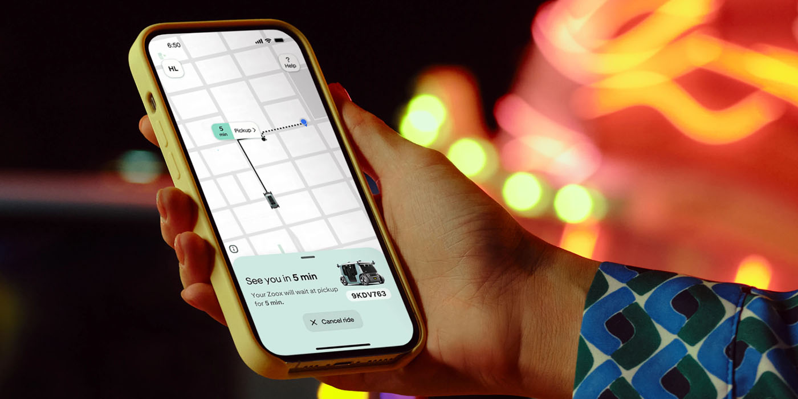
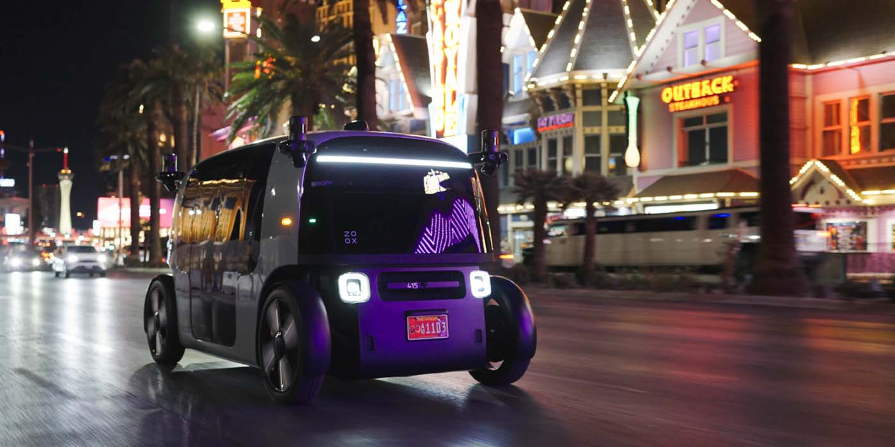
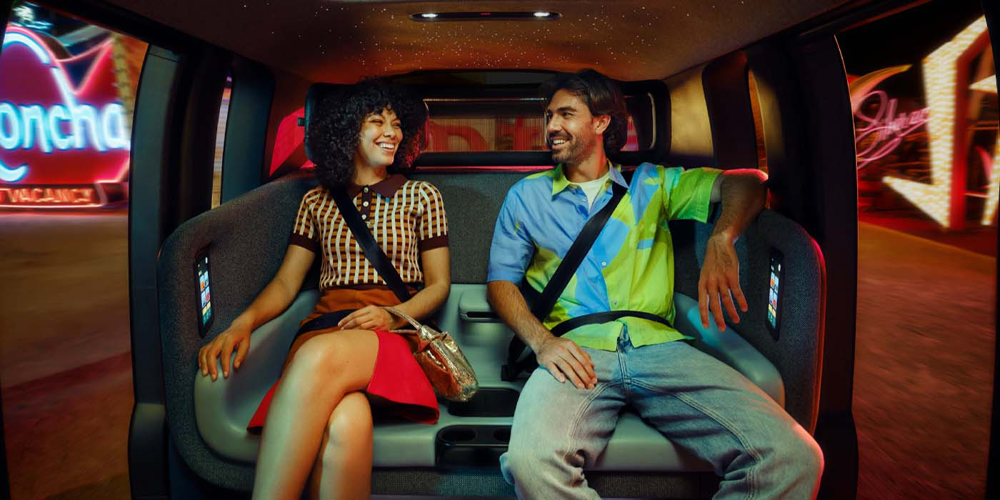
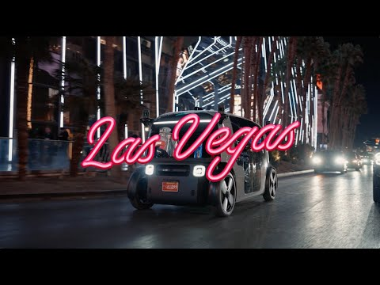

専用設計のロボタクシー開発企業であるZooxは、本日よりラスベガス・ストリップ周辺でドライバーレス乗車サービスを一般向けに正式ローンチした。このマイルストーンは同エリアでの数か月にわたるテストに続くものであり、当初の乗車はすべて無料で提供される。
設立から11年間、Zoox社は乗り合いタクシー輸送において独自のアプローチを取り続けてきた。既存の車両に自律走行技術を後付けしてロボタクシー車隊を構築するのではなく、Zooxは早い段階から独自の新型電気自動車を発表した。
同社の初期テスト車隊の大部分はセンサーやカメラを搭載した既存車両で構成されていたが、我々はZooxの専用設計ロボタクシーの開発・テスト・実装を密接に追い続けてきた。この車両はペダルもステアリングホイールも持たない設計となっている。
かつて、こうしたユニークなZoox製EVはサンフランシスコ・ベイエリアやラスベガス・ストリップ周辺でテスト走行する姿が見られた。ラスベガスでのロボタクシーネットワークは2年以上にわたってテストを続けてきた。シンシティでの初期ルートはZooxのラスベガス本社近くの1マイルのループで構成されており、最高時速35マイルで最大4名の乗客を輸送する能力を持っていた。
当初、テスト乗車はZoox従業員が対象だったが、「今後数か月のうちに拡大していく」とされていた。2024年3月までに、Zooxはラスベガスでのロボタクシーの最高速度を時速45マイルに引き上げ、夜間走行および小雨・濡れた路面状況下でのサービスを含むよう運行時間を拡大した。
これらの拡張を経て、Zooxは商業運営および有料顧客乗車の実現まであと一歩のところまで来ていると述べていた。そして本日、このロボタクシープロバイダーはラスベガスでそのマイルストーンに到達し、専用設計の車両で一般公開による無料乗車を提供するという業界初の快挙を達成した。



Zooxが本日公開したブログ記事によると、同社は専用設計のロボタクシーを使って一般向けに完全自律型ライドヘイリングサービスを提供する歴史上初の企業となったことを祝っている。ラスベガスはZoox独自のライドヘイリング体験にとって絶好の舞台であり、年間4,000万人の観光客の移動手助けにロボタクシーが貢献できるとしている。Zoox CEOのAicha Evans氏はこう述べている。
自律走行車業界は今年、目覚ましい進歩を遂げ、より安全でアクセスしやすいモビリティの未来に一歩近づきました。専用設計のロボタクシーを使った完全ドライバーレスのライドヘイリングサービスを立ち上げることで、私たちはこの画期的な旅の一部を担えることを大変光栄に思っています。ラスベガスは忘れられない瞬間で知られる都市であり、私たちのデビューに最適な場所です。Zooxはライドヘイリング体験全体を変革し、すべての乗車を愉快なものにすることを目指しています。
本日9月10日より、iOS またはAndroidデバイスにZooxアプリをダウンロードし、ラスベガスで稼働中の完全ドライバーレスのロボタクシーを呼ぶことができる。当初はすべての乗車が無料で提供されるため、初期の利用者が「Zooxとそのサービスに親しみ、フィードバックを共有できる」ようになっている。有料乗車への移行にはまだ規制当局の承認が必要だ。
今後の展望として、Zooxはサンフランシスコでのロボタクシー乗車のウェイトリストへの登録も受け付けると発表した。同社はベイエリアでのローンチ日をまだ発表していないが、近日中に詳細を明らかにするとしている。ラスベガスでのZooxロボタクシーの実際の走行映像はこちら。
